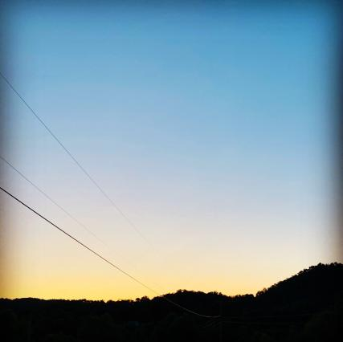
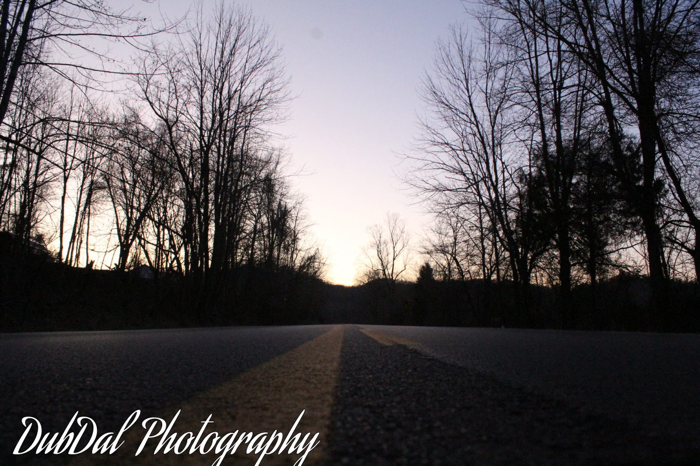

DubDal photography
This is where I'll post my progressing of my photography and if you wanna see my photography check out my instagram
dubdal_2020
 This was my first photo

This was a photo I last posted
The first photo I ever did was done on a iphone I did crop it so it doesn't look werid. The last photo I took it was on the canon rebel t6.
What camera should you use?
If you wanna get a cheap but workable camera use your phone camera. Differet phones different quality. But if you got money to spend try getting the canon rebel t6 for $500. There are different models, but the t6 is great for beginners!
Why I did photography
I did photography because I aways took a liking to photos, so being able to take photos would be so cool!.
I first started off with my old ZTE anroid which wasnt the best but it was all i had at the time. then i got the ihpone XR which made me happy still not the best but it was really good for a phon and that is when i knew i wanted to be a photographer.
So i went to my mom and said hey mom can i get the canon rebel t6 for my brithday. (my brithday was 6 months away so it was a long wait. But on my bday i got it and i loved it.
Did i work for anyone?
When i only had my iphone a friend of mine who is a photographer, I ask him hey can i join your photography work. He said yeah so then i was apart of sure_shots_16! when i got my camera (canon rebel t6) about 2 month i quit to make my own business. There i made my new business DubDal photography.
If you want I accept donations